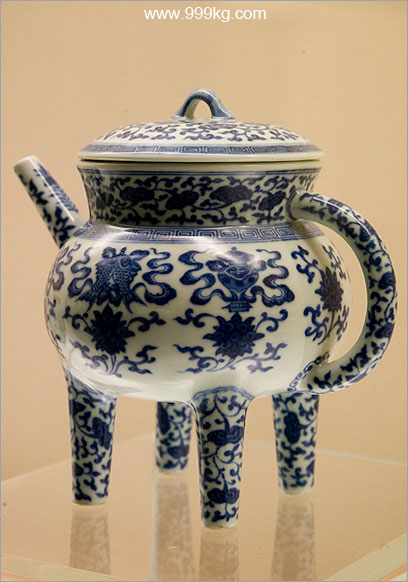
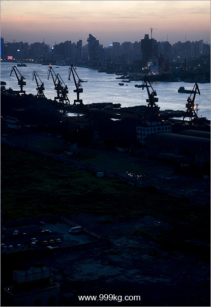
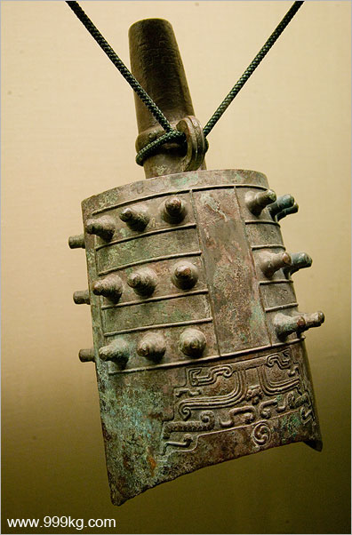
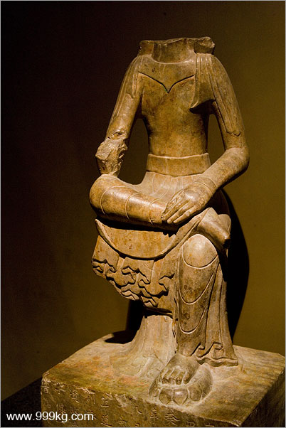
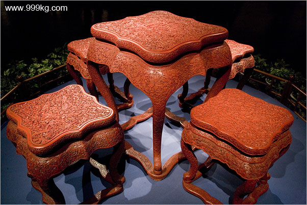
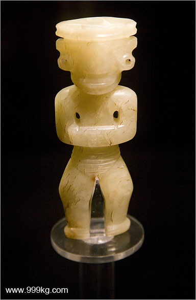

|
上海图文日记2006
2006年8月2日
上海博物馆巨大无比，从上午10点到下午5点我从一楼到四楼，各个展厅不停的狂奔，连走马观花都谈不上。我预计还会再来上海博物馆一次。
根本就没有时间仔细欣赏，我的心思都放在寻找那些拍出来会比较漂亮的展品了。很多精品虽然眼睛看上去也很漂亮，可是拍出来不会漂亮，我就没看了。人的眼睛对光线的宽容度很大，照相机不管是胶卷还是数码，都差多了。博物馆的现场光都是点射灯，明暗对比太强烈。我需要寻找那些光照比较均匀的photographicable
items.
博物馆里面不可以用闪光灯和三角架，展品除了某些不够珍贵的石雕以外都在玻璃柜子里，反光很严重，要拍好是很困难的，需要细心寻找角度。尤其是我的相机重达两公斤，和一哑铃相当，拍摄几百张下来，现在手腕还很酸疼。
总共拍摄超过300张，还可以的大约30张，可以组成一个上海博物馆小专题。因为图片太多，今天只能处理一部分，以后慢慢补充。
博物馆的这些片子都是用EF28-135IS一个镜头，大多数使用ISO800到1600高感光度，全部为现场光available light.
有些使用了中性渐变滤色镜。
拍完上海博物馆，我立即赶往浦东的上海海事大学。我要严重感谢胡萝卜同学，他前天邮件告诉我海事大学有上海最高的26楼学生宿舍，可以看到陆家嘴。今天初次见面，但胡萝卜同学很热心，先是和我一起和保安交涉，失败。眼见上楼顶没有指望，又帮我从24楼到26楼挨个宿舍敲门。要知道这是海事大学的女生宿舍，敲门很不方便的。最后我们在24楼的一间宿舍里拍了几张。
------------------------------------------------------
在上海只剩下12天，接下来我开始每天早上六点起来，就不能每天处理图片更新网站了，但是我会争取两到三天更新一次。感谢诸位朋友的支持。

景德镇青花八吉祥盉。清道光年间。1821-1850
上海博物馆藏品。图片号：shanghai802A

上海海事大学所拍黄浦江。图片号：shanghai802B.

郘（户戈黑）编钟局部。1870年山西荣河县出土。春秋晚期青铜器。
上海博物馆藏品。图片号：shanghai802C.

道常造太子石像。北齐天宝4年，公元553年。
上海博物馆藏品。图片号：shanghai802D.

剔红花卉纹方桌，凳。上海博物馆藏清朝家具。图片号：shanghai802E.

神人玉。龙山文化。公元前24世纪 - 公元前20世纪。
上海博物馆藏品。图片号：shanghai802F.
|